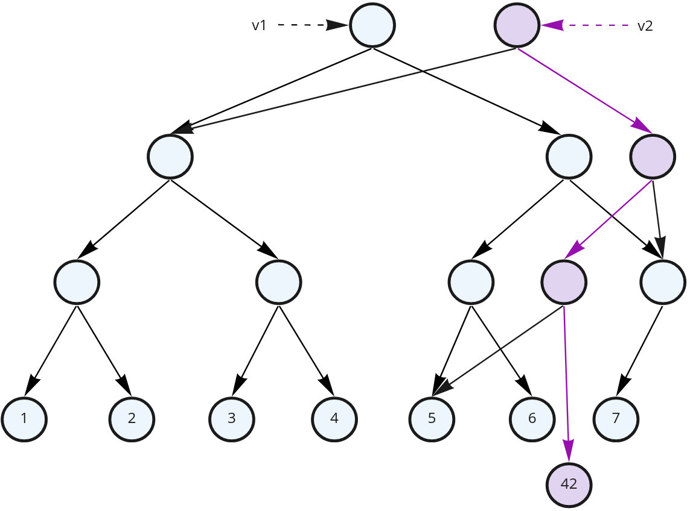

Software Design with Immutability
(for Java 17)
Alternatively: Software Design with Values
(for Java 17)
Java >= 10 features that grabbed my attention
Useful for FP
JEP 395: Records (https://openjdk.java.net/jeps/395)
JEP 361: Switch Expressions (https://openjdk.java.net/jeps/361)
JEP 394: Pattern Matching for instanceof (https://openjdk.java.net/jeps/394)
JEP 406: Pattern Matching for switch (Preview) (https://openjdk.java.net/jeps/406)
JEP 409: Sealed Classes (https://openjdk.java.net/jeps/409)
Other language features
JEP 378: Text Blocks (https://openjdk.java.net/jeps/378)
JEP 286: Local-Variable Type Inference (https://openjdk.java.net/jeps/286)
Libraries
JEP 321: HTTP Client (https://openjdk.java.net/jeps/321)
JEP 266: More Concurrency Updates (https://openjdk.java.net/jeps/266)
...Java
- Started as a quite imperative language
- But more and more functional features and style are popping up
- Declarative annotations have took over the norm in the last decade and more
- Why is that happening?
- How can FP style improve our codebase?
Me
- FP enthusiast
- Using mostly Scala at the moment
- Strong interest in distributed systems and domain design
- Used to be part of CFC Reporting
- Now in ISF (Store Pick) Orchestration & Planning team
Imperative programming
- We command the computer what to do
- Step-by-step instructions (statements)
- Executed over time (sequence is important)
- Places (variables) of data that change constantly
- Saves memory
- Control over memory access (good for optimizations)
- Hard to follow – we have to keep in mind every change and the order in which changes happen
Software is not about memory places
- The heart of a software is working with information
- and transforming information to something useful
- Information is a collection of facts
- data, events, actions, time passing, …
- Which lead to derived (often aggregated) facts and actions taken
- actions from software perspective is sending a derived fact to another component/system
- Facts are values
- They don’t change!
- “The Value of Values”, Rich Hickey
Functional Programs
They describe transformations of values
Declarative – we describe “what” we want to get instead of “how” to get it
A composition of expressions and definitions
- each expression has a value and a type
Expressions are the only thing that define dependencies!
- as there is nothing that can change. Just new values produced
Functional Programs
- Easy to follow and to reason about
- Every variable is always the same, it always has the same meaning
- The time has “stopped”
- Easy to compose different parts
- What matters is only their value
- We just have to match the types and the compiler helps us with that
- “Guided by the types”
- Constraints enable!
Buut… Doesn’t Things Change Over Time?
var oldZdravko = new Person("Zdravko", 32, "Varna", "Bulgarian");
var newZdravko = oldZdravko
.withAge(oldZdravko.age() + 1)
.withAddress("Sofia");
oldZdravko.sayHiTo(newZdravko);- Both versions are a fact that was true at certain point in time
- Immutable values give us a snapshot in time
- A thing that can be identified and changes over time is called an entity
- often we are interested in the latest state of an entity
- but previous ones bring us additional information
But for a result to be observed shouldn’t we make changes?
- A.k.a. do a side effect?
- In the end we do need to tell the computer what to do
- When using FP we push such side effects to just specific (and controlled) places, usually the outer edges of the program
Functional Wizard

Controls time & space
There is actually a space for both
- Imperative is invaluable for some algorithms and performance optimizations
- Functional makes the rest of the program easier to implement, grasp and compose
How can we achieve immutable values in Java?
- Basic Java types (primitives and Strings) are immutable
- Immutable values are easily composed into more complex structures
- Algebraic Data Types – a type formed by combining other types
- Product types (Java 16 Records)
- Sum types (Java 17 sealed types and patern matching for switch)
- Exponential types (Java 8 function types)
Product types
- A cartesian product of simpler types
- model a “has-a” relationship
Type1 x Type2 x Type3 x ...- Often denoted as
(Type1, Type2, Type3, ...) - A product type has
|Type1| * |Type2| * |Type3| * ...possible instances - Example:
(boolean, byte)is a product type - It has
2 * 256possible values
Records
Records are named product types
record Person(String name, int age, String location) {
public String sayHi() {
return String.format("Hello, I am %s from $s.", name, location);
}
}
var geri = new Person("Geri", 30, "Plovdiv");
var extendedGreeting = String.format("%s I am %d years old.",
geri.sayHi(), geri.age());
// Hello, I am Geri from Plovdiv. I am 30 years old.They cannot be mutated. Once instantiated their value is fixed
Partial initialization is a source for bugs
If Person was a Java Bean:
var geri = new Person();
geri.setName("Geri");
geri.setLocation("Plovdiv");
// ...
var extendedGreeting = String.format("%s I am %d years old.",
geri.sayHi(), geri.age());
// Hello, I am Geri from Plovdiv. I am null years old.- No one told us that we forgot the age
- If we add a property the compiler won’t complain it’s not initialized
- Partial (incomplete) data is hard to work with (especially when unexpected)
- Records guarantee all data is there and safe to work with
- Thread unsafe – Java doesn’t guarantee us that if we share
geriwith another thread it will see its values
Group related values into their own meaningful records
Instead do:
- Easier to understand (each part of the record has specific semantic)
- Address can be reused and transformed on its own
- A composition
Put proper domain boundaries between values and between entities
(depending on the context)
- Most of the time a person is not defined by their bank account. The bank account can be seen as a separate concern
- A self-contained entity is often called Aggregate and defines transactional boundaries
Immutable Records in Time
public record Person(String name, int age, Address address) {
public Person getOlder() {
return new Person(name, age + 1, address);
}
}
public record Address(String country, String city, String street) {}
var youngRadost = new Person("Radost", 24, new Address("Bulgaria", "Veliko Tarnovo", "ul. Roza"));
var olderRadost = youngRadost.getOlder();
Immutable Records in Time
public record Person(String name, int age, Address address) {
public Person getOlder() {
return new Person(name, age + 1, address);
}
}
public record Address(String country, String city, String street) {}
var youngRadost = new Person("Radost", 24, new Address("Bulgaria", "Veliko Tarnovo", "ul. Roza"));
var olderRadost = youngRadost.getOlder();Immutability enables:
- Persistence – both
youngRadostandolderRadostremain valid objects.- Helps with code robustness, especially in concurrent and multi-threaded environments
- Structural sharing
- Both objects share most of its internal objects
- We didn’t have to copy the whole state so it was a fast (constant) operation.
What other value objects do we have?
- Data structures
- They can be part of a product type, just like any other value type
- Java comes with only mutable data structures, which negate many of the benefits and can cause problems
Immutable data structures
We will use Vavr for the examples
Immutable List
import io.vavr.collection.List;
var xs = List.of(1, 2, 3);
xs.head(); // 1
xs.tail(); // List(2, 3)
var emptyList = List.<Integer> empty();
var singleElementList = emptyList.prepend(3);
var multiElementList = singleElementList.prepend(2).prepend(1).prepend(0);
multiElementList.take(2); // List(0, 1)
multiElementList.drop(2); // List(2, 3)
multiElementList.size(); // 4; works in linear timeHow does List work?

How does List work?

- Persistence
- Structural sharing
- If any variable goes out of scope any unused remaining objects will be GCed
Adding an element to the end

We cannot share common objects here. The operation is linear
Vector – efficient random access

A balanced tree
Vector – efficient random access
All three operations have the same complexity – log2n
Vector – replacing an element

Vector in Vavr
- A tree with 32 children for each node
- The complexity of operations is log32n
- This is considered “effectively constant”
- Useful when random access to elements is needed
- The structure is called Radix Balanced Tree
Other Structures
- HashSet and HashMap
- Similar idea
- Implemented via Hash array mapped trie HAMT
- SortedSet and SortedMap
- Red-Black trees are perfect for immutable data structures
- Queue, PriorityQueue
Benefits when using immutable values
(thus far)
- Persistence and structural sharing
- Safe sharing between components
- No need for “ownership” concept. No one own it
- GC takes care to free up unused stuff
- No need for defensive copying when nothing can change
- Especially helpful for concurrent systems (more on this later)
- Everything has clear inputs and outputs
voidfunction signatures tell you nothing
- Composable
- Reproducible results
- The same input always lead to the same output
- Perfect for tests
Sum Types
- A disjoint union of types
- model a “is-a” relationship
type ABCSum = A | B | C– eitherAorBorC|ABCSum| = |A| + |B| + |C|Byte | Booleanhas 2 + 256 = 258 elements
Enums are Sum Types
type Suit = Clubs | Diamonds | Hearts | Spades:
A Sum Type of Product Types (Sealed Types)
public sealed interface Whereabouts {
record AtLocation(String locationId) implements Whereabouts {}
record InContainer(String containerId, String containerPosition) implements Whereabouts {}
record InMover(String moverId) implements Whereabouts {}
}sealedsays no other implementations ofWhereaboutsexists apart from the listed here- This a domain-specific sum type
- They are actually quite common in domains
Working with alternatives
type Whereabouts = AtLocation | InContainer | InMoversuggests that we need to branch depending on the case- To make this easy Java introduced two improvements on switch:
- made it an expression
- branching per type (a.k.a. switch pattern matching)
String describeWhereabouts(Whereabouts whereabouts) {
return switch (whereabouts) {
case Whereabouts.AtLocation atLocation ->
String.format("At location: %s: ", atLocation.locationId());
case Whereabouts.InContainer inContainer ->
String.format("In container: %s: ", inContainer.containerId());
case Whereabouts.InMover inMover ->
String.format("In mover: %s ", inMover.moverId());
};
}If we miss a case it won’t compile
String describeWhereabouts(Whereabouts whereabouts) {
return switch (whereabouts) {
case Whereabouts.AtLocation atLocation ->
String.format("At location: %s: ", atLocation.locationId());
case Whereabouts.InContainer inContainer ->
String.format("In container: %s: ", inContainer.containerId());
};
}
// error: the switch expression does not cover all possible input valuesSum types vs OOP
- Sum types are exhaustive – no other variant can appear
- Adding a variant automatically breaks the code at compile time
- OOP subtype polymorphism has unrestricted subtyping
- Anyone can add a variant at any time. They just need to follow the interface
- Adding an operation automatically breaks the code at compile time
- There are types suited for sum typing and types suited for OOP
- Know the difference. Choosing the right one can help or domain design a lot
Sum Type – Make Illegal States Unrepresentable
What if we have implemented Whereabouts like this:
enum WhereaboutsType {
AtLocation, InContainer, InMover
}
record Whereabouts(WhereaboutsType whereaboutsType, String entityId,
String containerPosition) {}- This pattern can be seen often in Java
containerPositionshould be illegal forAtLocationandInMover. This definition doesn’t communicate thatentityIdbecomes quite a generic name and requires all the IDs to be of the same type. It’s quite easy to mix them up
Interoperability with TypeScript
Interoperability with TypeScript
function describeWhereabouts(whereabouts: Whereabouts) {
switch (whereabouts.type) {
case "AtLocation": return `At location ${whereabouts.locationId}`;
case "InContainer":
return `InContainer ${whereabouts.containerId}(${whereabouts.containerPosition})`;
case "InMover": return `In mover ${whereabouts.moverId}`;
}
}Describing Possible States with Sum Types
sealed interface BeloteRoundState {
record Initial(List<Card> deck) implements BeloteRoundState {}
record Bidding(List<Hand> hands, Biddings biddings, List<Card> deck) implements BeloteRoundState {}
record Playing(List<Hand> hands, takes, announcements, ...) implements BeloteRoundState {}
record Finished(takes, announcements, ...) implements BeloteRoundState {}
}Each of these would probably also have different behaviour
Lists can be implemented as a sum type:
nulls are dangerous. Make optionality explicit
sealed interface Option<T> {
record Some<T>(T element) implements Option<T> {}
record None<T>() implements Option<T> {}
}- Forces you to handle the optionality
- Such types come with use case-specific set of helper functions (e.g.
map,flatMap,getOrElse, etc) that transform them as values
Exceptions are not values:
Throwing an exception is a side effect
Not a value that we can easily transform or share
Exception handling is bound to the current thread. It’s not easy to share the exception with other threads
Hard to compose:
Errors as values:
// Either a success or an exception (as a value)
sealed interface Try<T> {
record Success<T>(T value) implements Try<T> {}
record Failure<T>(Throwable e) implements Try<T> {}
}
// Either a success (Right) or a custom error (Left)
sealed interface Either<E, T> {
record Right<E, T>(T value) implements Either<E, T> {}
record Left<E, T>(E e) implements Either<E, T> {}
}- Errors become values that can easily be transformed and composed
- Can be shared between componets, threads or even other systems on the network
- Useful for domain-specific error handling
- Forces the user to handle the possibility for error (if needed)
- For programmer errors and pre-condition checks still prefer exceptions
- Such types are called effects
- How to use them is a topic of another talk
In what other ways are immutable values helpful?
Concurrency
Storage
- Append-only logs are everywhere nowadays
- write-ahead logs, LSM (log-structured merge-tree), Kafka as unified log, …
- Each entry is an immutable fact
- storage can easily be replicated or processed just by reading the log
Storage
- Software-Transactional Memory
- Each entity has a version history marked by transaction id (or a timestamp)
- This allows consistent reads without acquiring any locks
- A transaction manager for updating entities (uses atomic operations instead of logs)
- Fast thanks to structural sharing
- MVCC – similar idea for DBs
- Used in PostgreSQL
- Tuples (rows) in PostgreSQL are immutable
- Vacuuming process for garbage collection
Distributed Systems
- Messages that systems exchange are values
- defined by protocols
- Communication via events/facts
- Event Sourcing – instead a history of state keep a history of events
- Events capture intent, states don’t
- Stream processing
- Big data
Git
Git is a distributed system that use persistent data structures with structural sharing
UI
- Immutability is extremely convenient for UI
- Example: Redux provides one big immutable aggregated value as a state
- There are strict rules on how to update the state
One more front-end example
Alternative: AsyncResult
type AsyncResult<E, T> = Success<T> | Failure<E> | IsLoading
// definitions...
// The redux object can then be:
{
orders: AsyncResult<OrderError, Array<Order>>
}The type should come with utilities to compose AsyncResults into bigger values
Immutability Changes Everything
A review by Pat Helland of uses of immutability in various contexts
What if programs themselves were a value?

Programs as values
val program = for {
_ <- IO.println("What is your name?")
name <- IO.readln
_ <- IO.println(s"Hello, $name, welcome!")
} yield ExitCodes.Success
// Nothing is executed yet
program.unsafeRun() // Explicitly start the side effects
List(program, program, program).map(_.unsafeRun()) // Run the program three times